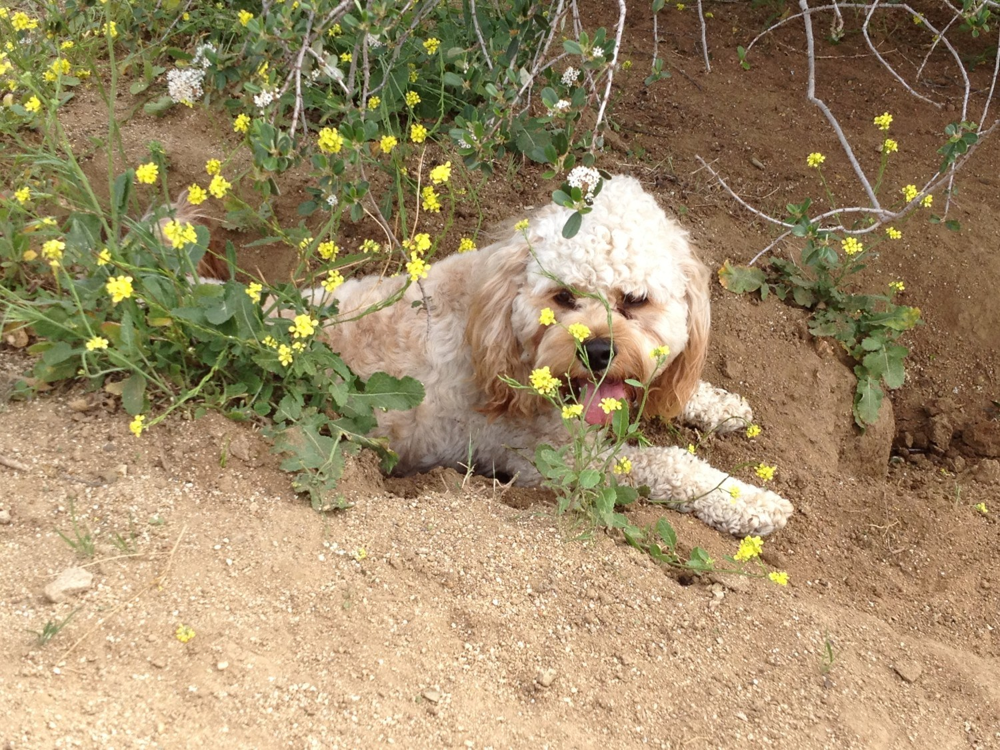
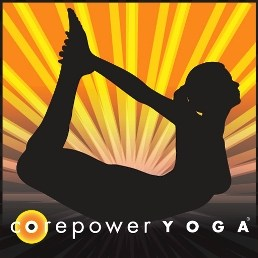

About
hello there. my name is thumper and i am a cocker spaniel and poodle mix from los angeles, california. the hoomans think i was born sometime in june of 2010, but i can't tell time so i wouldn't know. i enjoy chasing small animals, play with my cousin mowgli (a pit, pug and beagle mix), eating and going for runs with my hooman.
about my hooman - her name is leslie and i found her in los angeles in 2011. the nice hoomans at bark n' bitches in west hollywood told her i was found in an a backyard, abandoned with a bunch of other dogs. leslie came in the first day i was at bark n' bitches and took me home. while in los angeles, she worked at the laugh factory on sunset blvd. after work, we'd go for for hikes at runyon canyon almost every day. as the head of digital media at the laugh factory, she began delving into debugging little issues on the website and best practices for search engine optimization.
after realizing that she really enjoyed coding, she decided to go back to school for computer science. while applying to schools, she went to live in seoul, south korea to learn korean and more about her heritage. afterwards, she was accepted into georgetown university close to her hometown in the dc metro area so we moved back east. she spent four semesters studying at georgetown, learning the foundations of programming and computer science. she is planning on relocating us to san francisco (yay! back to the west coast!) to attend a full stack bootcamp and get her career started as an engineer!
when she's not working, studying or hanging out with me, you can usually find her painting, watching movies, at solidcore or corepower yoga, running or hanging out with friends. leslie will be posting most of the time, but i'll update as a guest occasionally here and there. she'll be putting up a portfolio soon so check it out when she does!